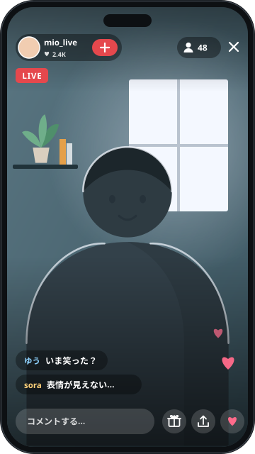
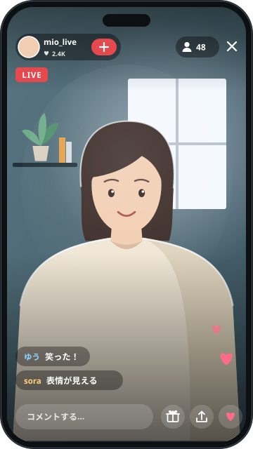
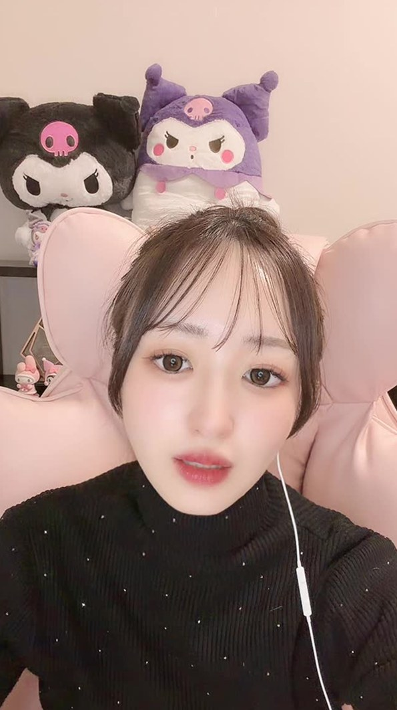
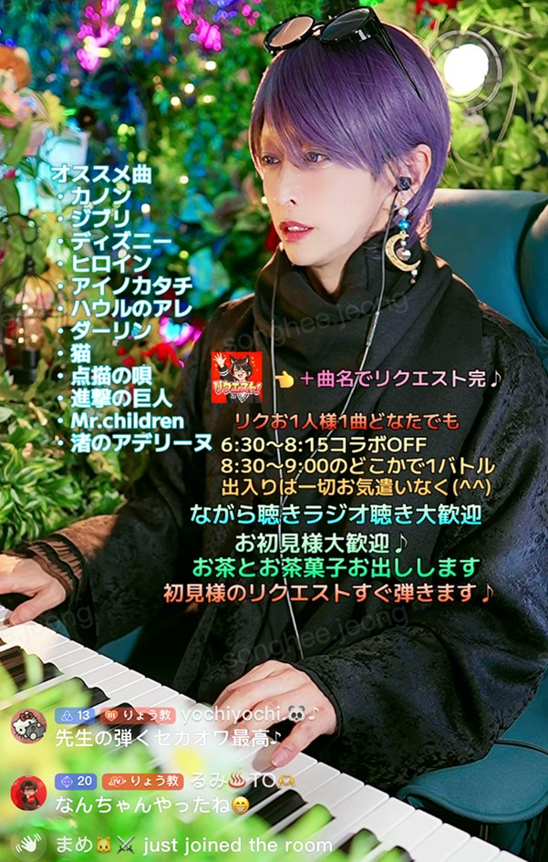
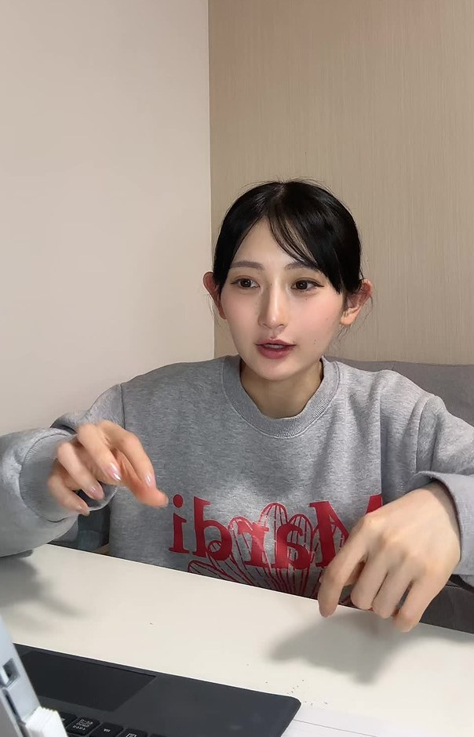

配信前に差がつく基礎攻略コンテンツ02/ 03
表情が伝わるLIVE画面の作り方
照明・画質・衣装を整えて、コメントや応援へのリアクションまで伝わる画面へ。
- 暗い
- 逆光
- 背景と同化
- 表情が読めない
BEFORE

BEFORE: 表情が読めない
AFTER

AFTER: 表情が読める
タップで切り替えて、見くらべる
- 顔が見える
- 目に光
- 背景から分離
- 表情が読める
学んだ先に変わること
- 配信者がすること顔が見える
- 視聴者表情が伝わる
- コメントへのリアクションが伝わる
- LIVE視聴者が「反応が返ってきた」と感じる
- その先会話・再訪・応援の満足度を作れる
攻略ノート
このコンテンツで学べること
照明
まず1灯から始める、表情を見せる光の置き方。
LIVEに効く理由顔の影が減ると、笑った・驚いたが視聴者に伝わりやすくなります。
画質
高いカメラより前に確認する、レンズ・ピント・映像状態。
LIVEに効く理由レンズの指紋やホコリは、画面を白く濁らせる原因になります。
衣装
背景に埋もれず、配信者自身が主役になる色と柄。
LIVEに効く理由あなたが背景に埋もれず、視聴者の目の負担も減ります。
STEP01照明
照明は、陰影をなくし、華やかさをプラスする
照明の役目は、画面を明るくすることだけではありません。表情を生き生きと見せ、肌のトーンを綺麗に整えることです。
LEVEL 1まずこれだけまず1灯。正面から顔が見える光を作る
カメラに顔を映し、顔の正面が暗くなっていないかを確かめます。
- 窓
- リングライト
- デスクライト
用語
リングライトを活用
リングライトは、輪の形をしたライトです。照明を足すときに活用できます。

STEP02画質
画質は、設定より先に「お手入れ」で決まる
解像度の設定ばかりを気にしていませんか。実は、設定以前の「物理的なケア」が画質を大きく左右します。
レンズについた 指紋やホコリは、画面を白く濁らせる原因になります。
最初は、この順に見る
レンズを拭く
メガネ拭きなどの 柔らかい布で拭きます。配信前の習慣にします。
明るさを見る
配信の画面で、顔が暗く映っていないかを確かめます。
ピントを見る
顔がぼやけていないかを確かめます。
背景との分離を見る
あなたが背景に埋もれて見えないかを確かめます。
BADやりがち
画質を上げようと、解像度の設定ばかりを気にする
GOODこう変える
配信前に必ず、柔らかい布でレンズを拭く
なぜ良い？画質を左右するのは、設定より前の物理的なケアです。
一段上もっと画質を詰めたい人へ慣れてからで OK
ここから先は、端末や配信の方法によって、できることが変わります。
ピントを固定する
配信中にピントがブレるのを防ぐため、フォーカスを あらかじめ固定（MFまたはAFロック）します。
推奨ビットレートに設定する
ノイズのない滑らかな映像をキープできます。
用語
MF・AFロック・ビットレート
MFは、ピントを手動で合わせること。AFロックは、自動で合ったピントをそのまま固定すること。ビットレートは、映像を送るデータ量の設定です。
STEP03衣装
衣装は、画面映えを計算して選ぶ
衣装選びも、大切なセルフプロデュースの一つです。服だけでなく、画面全体のビジュアルで選びます。
押さえる基本は2つ。色と柄
BAD色｜やりがち
背景と同化する色の衣装を着る
GOOD色｜こう変える
背景と同化しない「反対色」を選ぶ
なぜ良い？衣装は、画面全体のビジュアルを高めるために選ぶものです。
BAD柄｜やりがち
細かいストライプ、チェックや千鳥格子の服で配信する
GOOD柄｜こう変える
無地や大きめの柄を選ぶ
なぜ良い？細かい柄は、カメラを通すと画面がチカチカと波打つことがあり、視聴者の目の負担になります。
用語
モアレ現象
細かい柄の服がカメラを通ったときに、画面がチカチカと波打って見える現象のことです。


最優先は「美肌」ではなく「感情」開く
綺麗な肌を作ることがゴールではありません。視聴者が、あなたの感情を瞬時に読み取れることがゴールです。
例瞬時に読み取れるようにしたいもの
笑った
驚いた
喜んだ
感謝した
目に光が入る位置も確かめる開く
光の位置によって目元が暗くなりすぎると、表情が弱く見えることがあります。
鏡やプレビューで、自然に見える位置を探す
コツ
照明を買い足す話ではありません。いまある光の位置を動かして確かめます。
色温度を混ぜすぎない開く
色温度は、光の色み（青白い〜黄色っぽい）のことです。
BADやりがち
青白いライトと、強い黄色の室内灯が混ざっている
GOODこう変える
まず主の光を1つ決める
なぜ良い？色みの違う光が混ざると、顔色が不自然になる場合があります。
配信のテーマに合わせて、光を少し変える開く
照明の色や背景のライトを少し変えると、空間のテーマを作れます。
例変えてみる場面の例
雑談
イベント
夜配信
歌
誕生日
コツ
基本の1灯ができてからで十分です。
ファン化・応援につながる理由
表情が見えると、「自分の一言で喜んでくれた」が伝わる
LIVEの魅力は、リアルタイムの反応です。
- 視聴者今日誕生日！
- 配信者笑顔で反応する
- 視聴者が、その表情を見る
- 視聴者の気持ち自分の一言で喜んでくれた
これが、会話の満足感になります。
画面作りは「応援へのお返し」にもなる
視聴者が応援したとき、あなたの喜びが伝わること自体が、応援へのお返しになります。
ギフトを求めるためではなく、応援してくれた人へ返すための画面作りです。
- ギフト
- 気づく
- 表情
- 言葉
- 視聴者へ返る
LIVEとSNSを循環させる
変える前と後を、ショート動画にする
- 変える前と後を撮る
- ショート動画・SNS
- 反応を見る
- 次のLIVEの改善へ
くり返す
最後の「次のLIVEの改善へ」から、最初の「変える前と後を撮る」へ戻る
照明を変える前と後は、そのままショート動画の題材になります。
やってみる行動
照明を変える前と後を、短い動画に撮る。
いつも見てくれる人
配信環境を改善している過程を共有し、あなたの成長を一緒に感じてもらえます。
新しく来る人
数秒で、あなたの工夫・人柄・変化が分かります。
自分
どちらの見た目が反応されるかが、次のLIVE改善の仮説になります。
配信前に思い出す3つ
配信前に、レンズを拭く
正面から顔が見える光を、まず1つ
プレビューで、表情が読めるかを見る
次の配信で試すこと
できた数 0 / 5
全部試せました。下の「できた目安」を確かめましょう。
できた目安
変える前と後を見比べて、顔の表情がどちらの方が読み取りやすいか判断できたら、次へ。